Much Ado About Nothing
莎士比亚《无事生非》复习网页
A Shakespeare-inspired revision website with sections for plot, characters, themes, and revision.
It is for your Revision Only.

莎士比亚《无事生非》复习网页
Scene by scene summaries from Act 1 to Act 5. Each scene includes a brief comic style teaser.🤓
Leonato welcomes Don Pedro and his followers Benedick, Claudio, and his illegitimate brother Don John to his house. Beatrice and Benedick are quarrelling, but Claudio speaks of his love for Hero.
Leonato 欢迎 Don Pedro 和他的随从 Benedick、Claudio，以及他同父异母的弟弟 Don John 来到自己家中。Beatrice 和 Benedick 一见面就斗嘴争吵，而 Claudio 则表达了自己对 Hero 的爱意。

Antonio mishears it is The Prince who is going to woo Hero. So Leonato is told a false rumour about Don Pedro's intentions towards Hero.
Antonio听错了，以为是亲王要去追求Hero。于是，Leonato听到了一个关于Don Pedro爱上Hero的假消息。
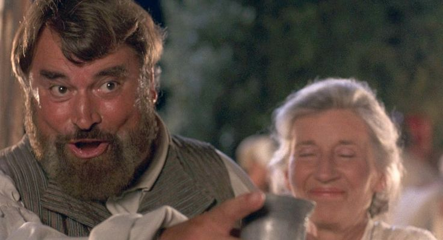
Don John, resentful and bitter, decides to sabotage Claudio’s happiness and begins planning with Borachio and Conrade.
心怀怨恨、满腹苦楚的Don John决定破坏Claudio的幸福，并开始和Borachio、Conrade一起策划阴谋。
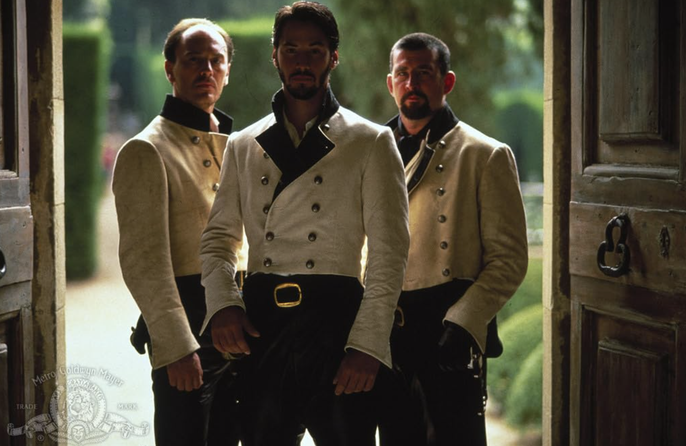
1) Beatrice shows her sharp wit and her scorn for love and marriage. Beatrice展现出她机智辛辣的一面，也表现出她对爱情和婚姻的不屑。
2) Don Pedro disguises himself as Claudio and woos Hero on his behalf. Don Pedro 假扮成Claudio，代替他向Hero求爱。
3) Benedick is masked and ends up in a verbal battle with Beatrice. Benedick 戴着面具伪装身份，结果还是和Beatrice展开了一场唇枪舌战
4) Claudio, hidden behind his disguise of Benedick, is deceived by Don John. Claudio在伪装之中被Don John欺骗了。
5) The misunderstanding is resolved, for now, and Claudio and Hero are soon to be married. 这场误会暂时被化解了，而 Claudio 和 Hero 也即将结婚。
6) Don Pedro comes up with a new matchmaking plan for Beatrice and Benedick. Don Pedro 想出了一个新的撮合计划，准备撮合 Beatrice 和 Benedick。
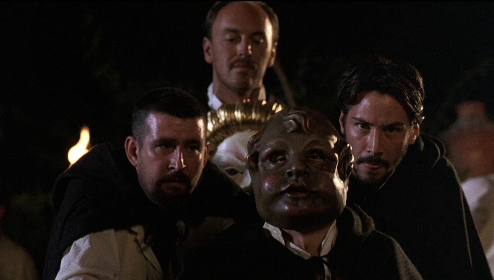
Borachio pleases Don John with his new scheme to discredit Hero Borachio 提出了一个新的计谋来败坏 Hero 的名声，这让 Don John 十分满意。
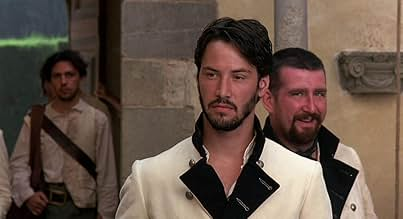
Benedick overhears a staged conversation and starts to believe that Beatrice is secretly in love with him. Benedick 偷听到一段事先安排好的对话，于是开始相信 Beatrice 一直在暗恋自己。
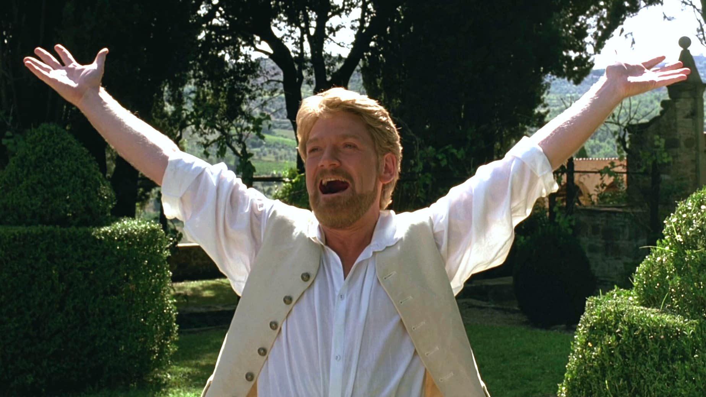
Hero and Ursula stage a conversation so that Beatrice overhears claims that Benedick loves her.
Hero 和 Ursula 故意安排了一段对话，让 Beatrice 偷听到别人说 Benedick 爱着她。
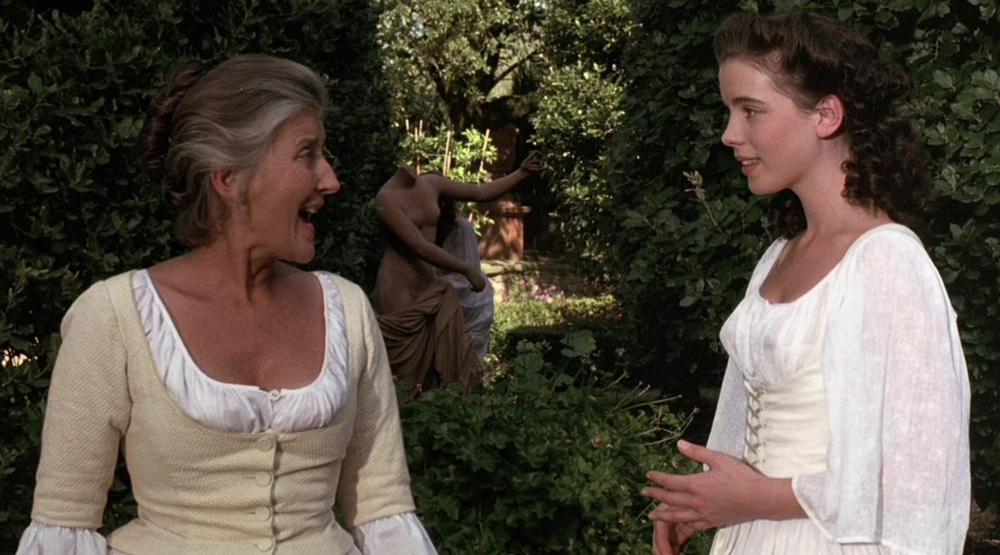
Benedick begins changing under the influence of love, while Don John prepares Claudio and Don Pedro to misjudge Hero.
在爱情的影响下，Benedick 开始慢慢改变；与此同时，Don John 正准备诱使 Claudio 和 Don Pedro 误会 Hero。
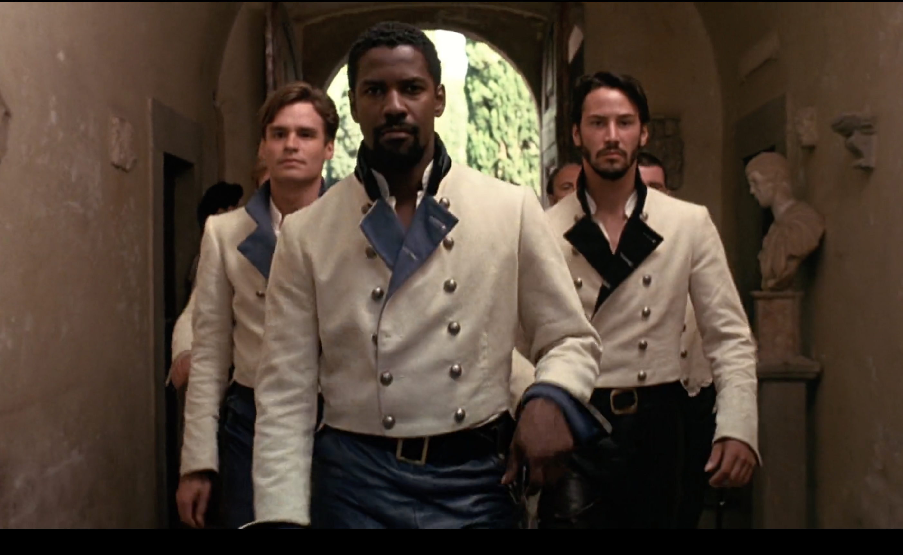
Dogberry leads the Watch with absurd confidence. Though comic and clumsy, they are close to uncovering the truth.
Dogberry 自信满满地带领着守夜人。虽然他们既滑稽又笨拙，却已经快要揭开真相了。
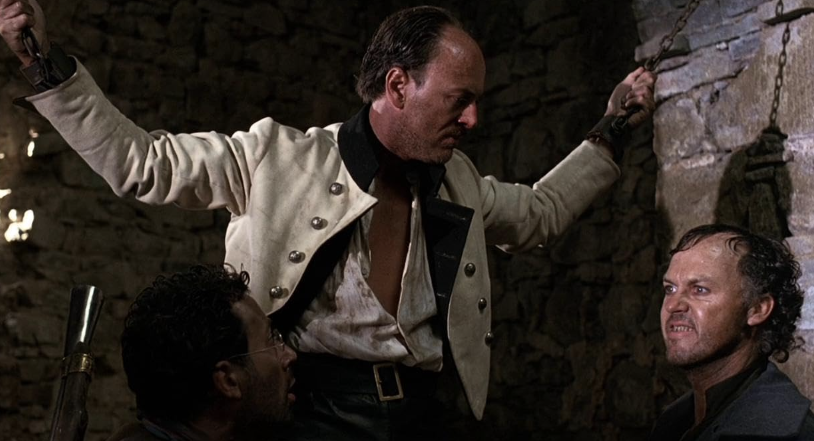
Hero prepares for her wedding, unaware of the public humiliation that is about to happen.
Hero 正在为婚礼做准备，却不知道一场公开的羞辱即将降临到她身上。
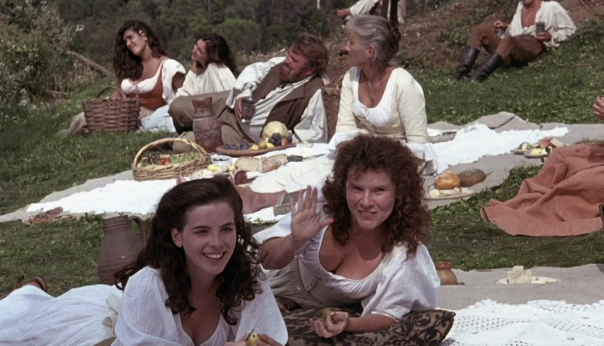
Dogberry tries to tell Leonato urgent news, but his muddled speech and terrible timing prevent immediate action.
Dogberry试图把紧急消息告诉Leonato，但他颠三倒四的说话方式和糟糕透顶的时机，让事情没能立刻得到处理。
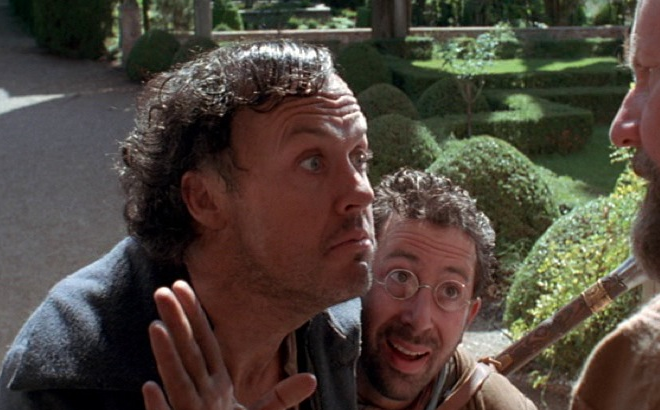
Claudio publicly accuses Hero of unfaithfulness at the altar. Hero collapses, but Friar Francis comes to her rescue by proposing a plan. A deceptive plan is made to conceal Hero and give out that she has died of grief. Beatrice demands that Benedick prove his loyalty and they fall in love.
在婚礼上，Claudio当众指责Hero对他不忠。Hero当场晕倒，但Friar Francis挺身而出，提出了一个应对计划。于是众人制定了一场“善意的骗局”：先将Hero藏起来，并对外宣称她因悲伤过度而死。与此同时，Beatrice要求Benedick证明他对自己的忠诚，而两人也终于彼此确认了爱意。
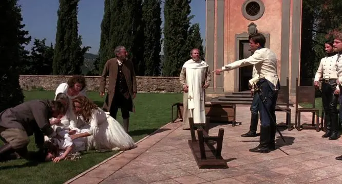
Dogberry’s Watch finally reveals Borachio’s confession and exposes Don John’s villainy.
Dogberry的守夜人终于揭露了Borachio的供词，也曝光了Don John的恶行。
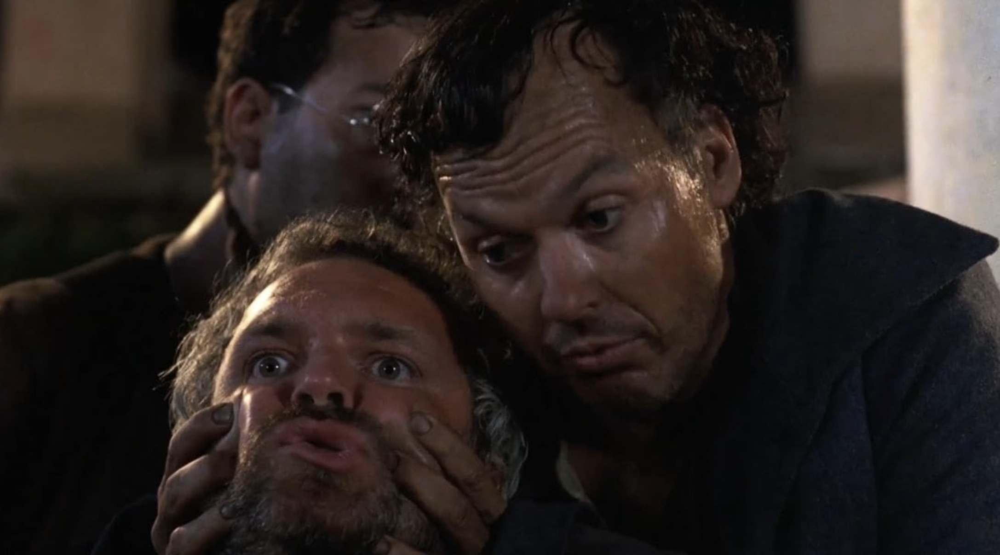
Borachio confesses all about his plan with Don John to everyone. Leonato and Antonio confront Claudio and Don Pedro. Benedick challenges Claudio, standing with Beatrice and justice.
Borachio 向众人坦白了自己与 Don John 一同策划的全部阴谋。Leonato 和 Antonio 当面对质 Claudio 与 Don Pedro。Benedick 则站在 Beatrice 和正义这一边，向 Claudio 发起挑战。
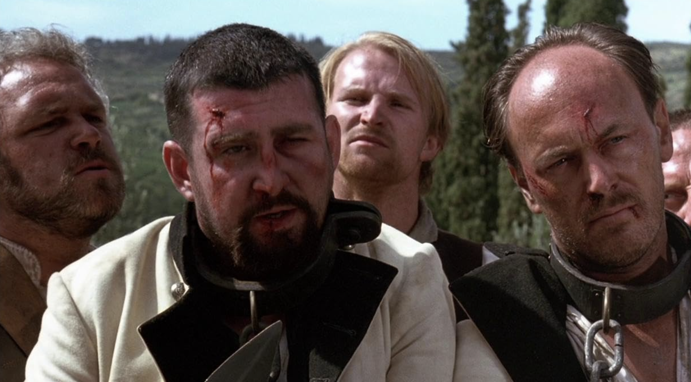
In one of the play’s tender moments, Beatrice and Benedick admit their love, though still in their witty style.
在这部戏最温柔动人的时刻之一，虽然他们依旧保持着那种机智逗趣的说话风格，但Beatrice 和 Benedick 终于承认了彼此的爱意。
Believing Hero dead, Claudio performs a public act of mourning and remorse by writing Hero an epitaph.
以为 Hero 已经死去的 Claudio 公开表达了自己的哀悼与悔恨，并为 Hero 写下了一篇墓志铭。
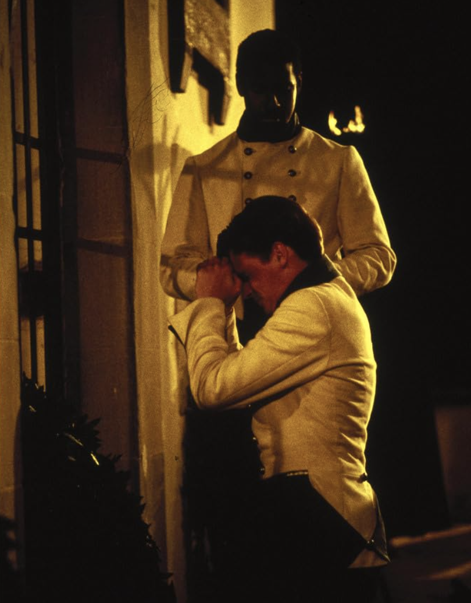
Hero is revealed alive, the truth is restored, and the play ends with celebration and marriages.
Hero 还活着的真相终于被揭晓，一切真相也随之恢复清白，而全剧最终在欢庆与婚礼中落下帷幕。
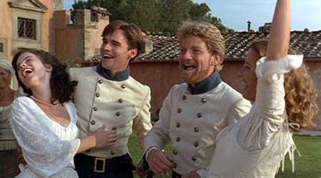
Major character cards for revision.
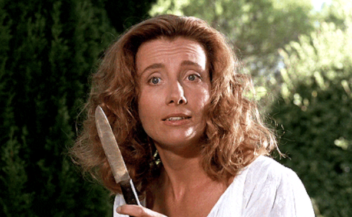
Role: Hero's Cousion
Beatrice is brilliant, funny, independent, and emotionally courageous. She speaks and behaves with more than usual freedom, and her witty intelligence presents a challenge to all the male characters. Her name, like that of Benedick, means 'the blessed one', and she too has sworn never to marry.
Beatrice聪明出众、风趣幽默、独立自主，而且在感情上也十分勇敢。她说话和行事都比一般人更自由大胆，而她机敏犀利的智慧也对所有男性角色构成了挑战。她的名字和Benedick一样，都有“受祝福的人”之意，而她也同样发誓终身不嫁。
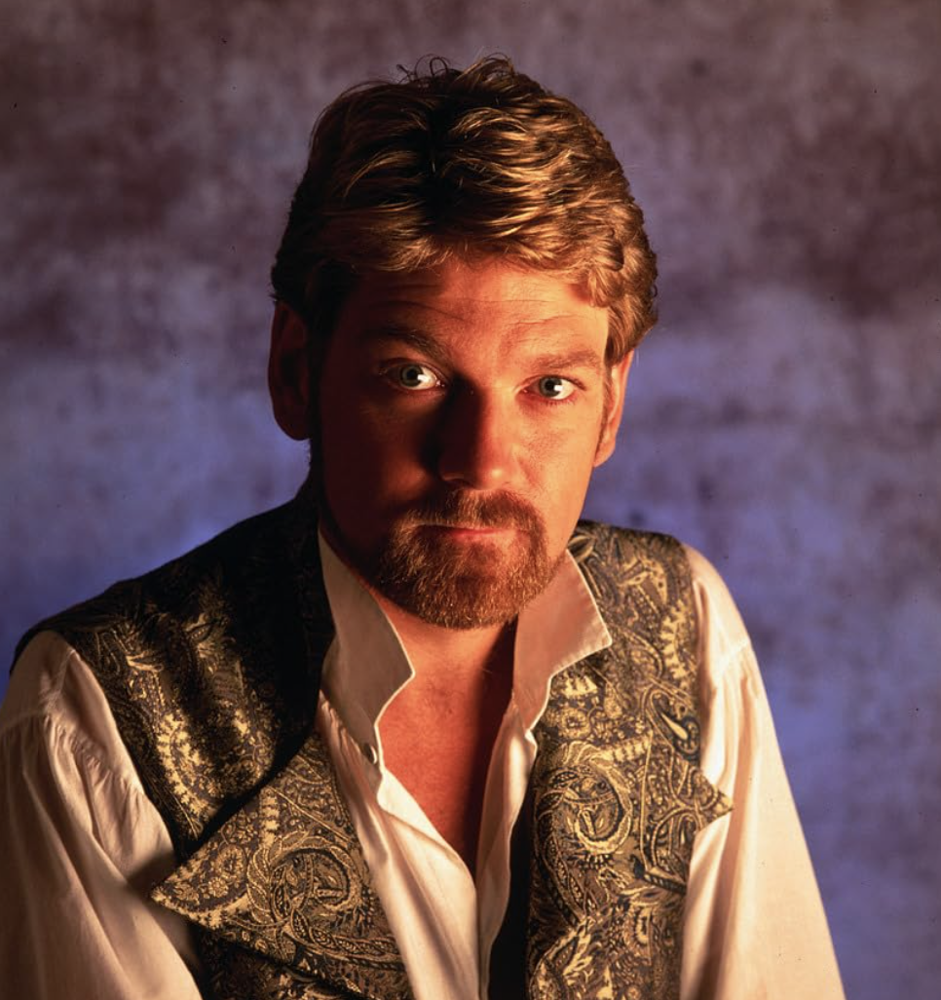
Role: Don Pedro's follower
Benedick adopts a pose of woman-hater, and swears he will never marry. As a comic bachelor who begins by mocking love, then grows into someone loyal, sincere, and refashioned.
Benedick 摆出一副厌恶女人的姿态，并发誓自己绝不结婚。作为一个喜剧式的单身汉，他起初嘲笑爱情，后来却逐渐成长为一个忠诚、真诚，并在爱情中完成自我改变的人。
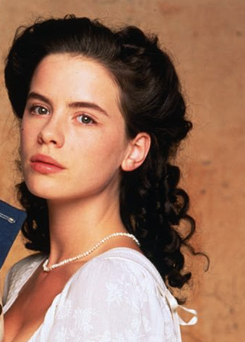
Role:The host daughter
Hero is described by Claudio as 'a modest young lady', and dismissed by Benedick as 'too low for a high praise, and too little for a great praise'. She is gentle and quiet, but central to the play’s exploration of innocence, female reputation, and public shame.
Hero被Claudio 形容为 “一位娴静端庄的年轻小姐”，而Benedick则评价她 “还不值得用太高的赞美来称颂，也太不起眼，不配受盛大的夸奖”。她温柔、安静，却处于整部戏对纯真、女性名誉与公开羞辱这些主题探讨的核心位置。
Role: A young noble man
He has been honoured for his conduct in the recent fighting, but is still very immature and naive in his judgement. He is romantic but impulsive. His flaws reveal how honour, masculinity, and public judgment can become destructive.
他因在最近的战斗中表现出色而受到赞誉，但在判断事情时仍然十分不成熟，也很天真。他富有浪漫情怀，却又冲动鲁莽。他的缺点揭示了：当荣誉、男性气概和公众评判被推向极端时，它们也会变成具有破坏性的力量。
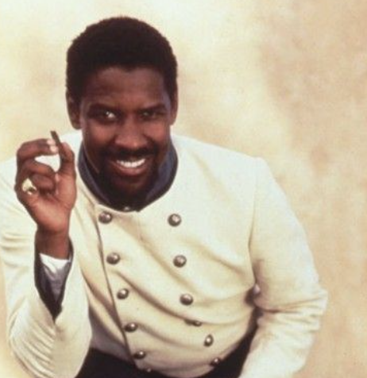
Role: The Prince of Aragon
Don Pedro is powerful and charming. He has won a victory over his illegitimate brother Don John, and is visiting Messina on his way home. He helps create the comedy, but also joins the false judgment against Hero.
Don Pedro权势显赫、风度迷人。他刚刚战胜了自己同父异母的弟弟Don John，并在返乡途中到访Messina。他推动了剧中的喜剧情节发展，却也参与了对Hero的错误指责。
Role: villain
Don John is the illegitimate brother of Don Pedro. He describes himself as "a plain-dealing villian". Driven by resentment and alienation, Don John uses deception to ruin happiness and social harmony.
Don John是Don Pedro同父异母的弟弟。他把自己形容为 “一个直来直去的恶棍”。在怨恨与疏离感的驱使下，Don John利用欺骗去破坏他人的幸福与社会的和谐。
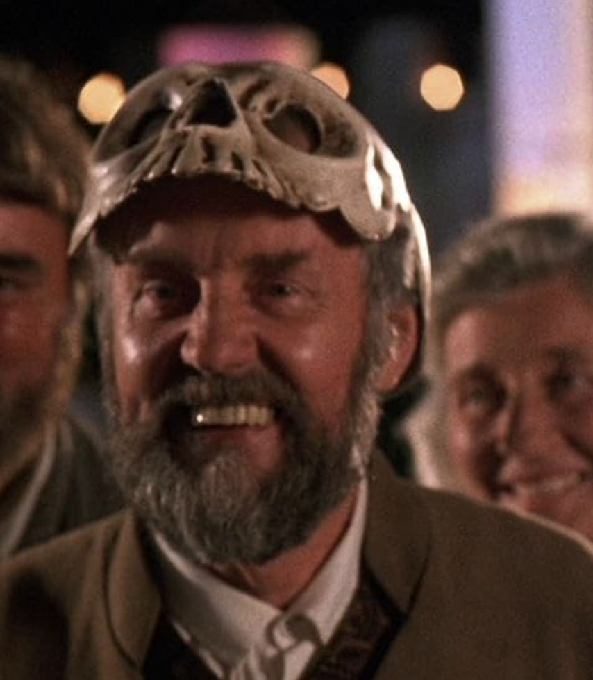
Role:The Governor of Messina, Hero's father
He is flattered by the attentions of Don Pedro, and quick to believe whatever the prince tells them. He is a paternal authority figure whose responses reflect the pressures of honour, reputation, and social expectation.
他因Don Pedro对他的礼遇而感到受宠若惊，也很快就相信亲王告诉他的一切。他是一位父权式的权威人物，而他的反应也体现出荣誉、名声与社会期待所带来的压力。
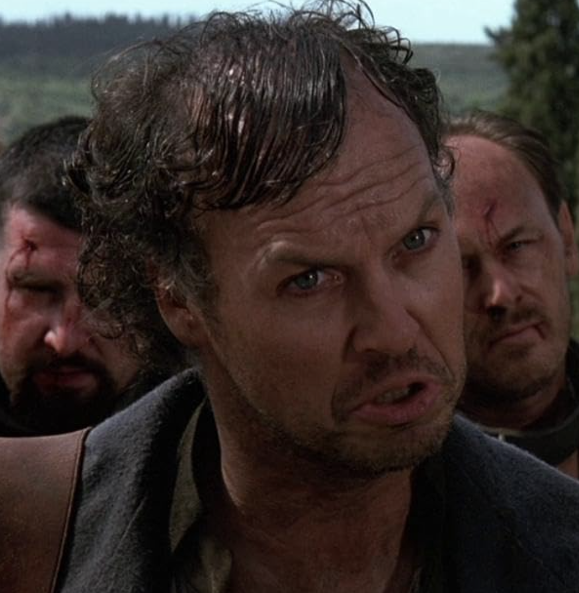
Role: Master Constable of Messina
Dogberry is absurd, confident, and linguistically chaotic. He has a great opinion of himself and his office but has an imperfect of the English language. He accidentally becomes one of the most important truth-finders in the play.
Dogberry荒唐可笑、自信满满，而且说话常常颠三倒四、混乱不清。他对自己和自己的职位评价极高，却并不能很好地掌握英语。可偏偏就是这样一个人，阴差阳错地成了全剧中最重要的真相揭露者之一。
Main themes in the play, each with a short explanation and grouped key quotes for revision.
The play contrasts shallow romantic performance with tested, intelligent love. Claudio and Hero reflect conventional courtship, while Beatrice and Benedick build something deeper.
Masks, overheard scenes, false accusations, and staged performances drive the entire play. Shakespeare keeps asking whether what people see can ever be trusted.
Public reputation shapes how people behave and how they judge others. Hero’s treatment shows how brutally female honour can be policed.
The play explores obedience, chastity, masculine honour, and female constraint. Beatrice pushes hardest against the limits imposed on women.
Speech in this play is social power. Language can wound, entertain, disguise, reveal intelligence, or completely derail a wedding.
A study section with quiz questions and essay prompts. Later, you can add flashcards, sample paragraphs, or downloadable notes.